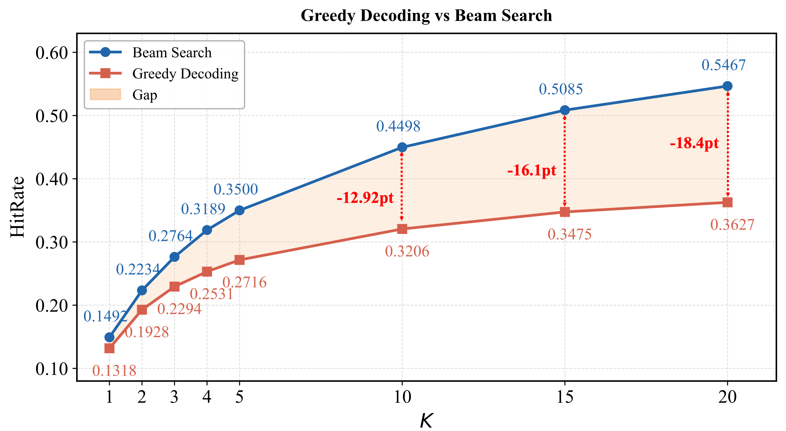
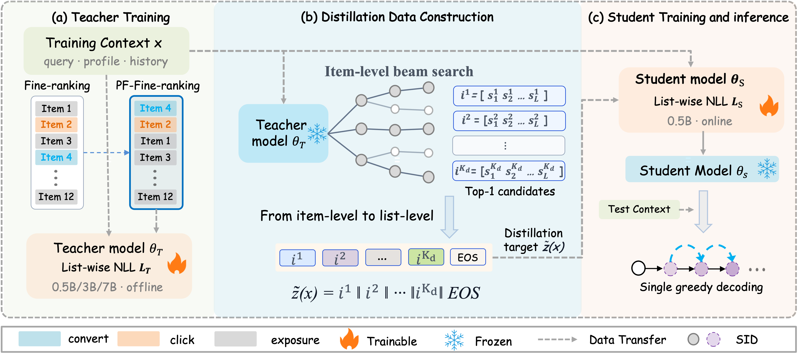
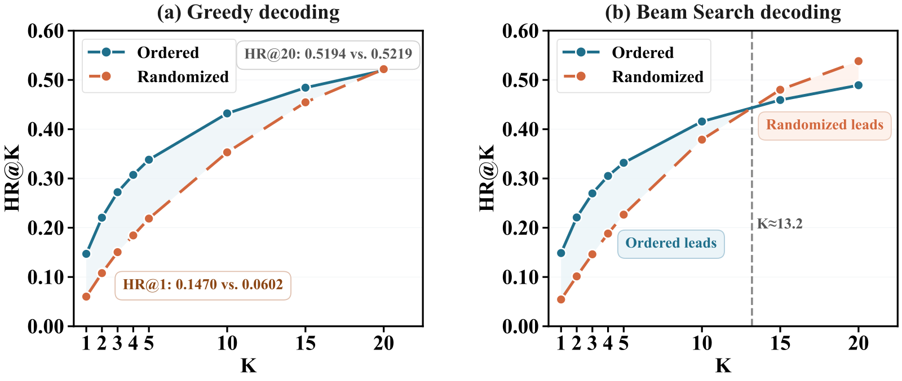

SHARE
Generative retrieval usually produces candidates with beam search in production: each beam generates the SID of one item along its own path, and the beams never see each other. The most direct way to write a whole list in one go, with each later item conditioned on the ones already produced, is to greedily decode a single sequence, but that works much worse. On Taobao Search, the same list-trained 0.5B model loses 18.4 points of HR@20 when decoded greedily instead of with beam search. Taobao's SLIDE (a training method that distills offline search results into lists) moves the search offline: it first trains a teacher model, runs beam search for every training request, concatenates the top 20 retrieved items in descending score order into one long sequence, and has a 0.5B student learn that sequence. Online, the student decodes greedily once. With a 0.5B teacher, the student's HR@10 rises from 0.3206 for directly trained greedy decoding to 0.4321; with a 7B teacher it reaches 0.4578, beating the 0.4498 of beam search at the same model size.
Teams working on generative retrieval, especially those who want list-level optimization (diversity, relevance RL) directly at the retrieval stage, should read this. It splits "why greedy decoding loses to beam search" into two causes that can be handled separately, then fixes both with one offline-built training target. The idea is simple and adds no online cost. The core idea in one sentence: let an offline teacher do the searching, and let the online student only write the list in order. Its limits are also clear: it reports offline HR on two datasets only, with no online A/B test, and building the offline data is not cheap.
What problem is it actually solving?
Start with the mainstream setup. Each item is encoded as a fixed-length SID (Taobao Search uses three levels with codebook sizes 32768, 8192 and 8192). The model reads the query and user history and generates the SID token by token. Beam search keeps many prefixes alive; each surviving path is one item, and sorting by cumulative log-probability gives the Top-K list.
This setup has two unavoidable problems. First, items in the list are generated independently, so the fifth item does not know what the first four are and cannot explicitly avoid duplicates or care about diversity. Second, during RL each response holds a single item, so all candidates compete for the top spot, which makes it hard to optimize a goal like "is the whole list good".
Greedily generating the whole list solves both: in one sequence every 3 tokens form one item, and later items are conditioned on all earlier ones. Yet a directly trained model decoded this way performs badly. An illustrative scenario:
| User searches "camping chair" | Beam search (illustrative) | Greedy full list (illustrative) |
|---|---|---|
| Position 1 | Portable folding chair A (bought the same model before) | Portable folding chair A |
| Positions 2–5 | Moon chair, roll-top table set, Kermit chair, fishing chair | Two similar folding chairs |
| Position 6 onward | Keeps expanding other branches up to 200 | Emits the end token early; the list has only a few dozen items |
The authors attribute the gap to two causes. One is the search space: beam search explores many SID paths at once and finds items with high joint probability, while greedy decoding follows a single path and is already behind at position 1. The other is scarce positives: training targets are ordered "purchases first, clicks next, impressions without clicks last", and purchases are rare, so list position becomes tied to interaction type. Later positions learn almost only from impressions and get weaker the further down they are. The figure below shows HR curves for the same model under both decoders; the gap widens as K grows.

The SLIDE pipeline
The pipeline has three stages:
| Stage | Input | What it does | Output |
|---|---|---|---|
| Teacher training | Fine-ranking logs | SFT on 12-item lists | A 0.5B, 3B or 7B teacher |
| Offline target building | Each training request | Freeze the teacher, run beam search, take the top 20 items, concatenate their SIDs in descending score order, append an end token | New training labels |
| Student training and serving | Same requests, new labels | Initialize a 0.5B student from the original pretrained weights and run plain SFT for two epochs | Only the student is served, with one greedy pass |

The key division of labor: beam search runs only offline and is responsible for finding the candidates; the student learns to write those candidates out one after another, in order. Let us take it apart.
The teacher: get search quality up first
What the student can learn is capped by what the teacher retrieves, so the first step is to train the strongest teacher possible.
Why use fine-ranking lists as labels?
Real user behavior is too sparse; training on clicks and purchases alone shows the model very few positives. Fine-ranking outputs cover many more of the candidates sent up by upstream retrieval. The authors compared three label types: behavior only, fine-ranking lists, and fine-ranking lists with positives moved to the front. They call the last one PF-Fine-ranking, meaning a positive-first fine-ranking list: purchased items first, clicked items next, impressed-but-unclicked items last, with the original fine-ranking order kept within each group.
Why put positives first?
Beam search only uses the model's output distribution at the first item position. Putting the purchased item first gives it direct supervision at exactly the position beam search uses. The teacher loss is the list-wise negative log-likelihood, item by item:
Here is the query and user features of request , is the -th item in the list, and are the items before it. Intuitively, each item is predicted given the ones already seen.
| Teacher labels (evaluated with beam search) | HR@1 | HR@10 | HR@20 |
|---|---|---|---|
| Behavior only | 0.1126 | 0.3934 | 0.4978 |
| Fine-ranking list | 0.1458 | 0.4384 | 0.5337 |
| Positive-first fine-ranking list | 0.1492 | 0.4498 | 0.5432 |
Switching to fine-ranking lists raises HR@10 by 4.5 points, showing that fine-ranking results do carry useful signal beyond behavior logs. Moving positives to the front adds another 1.1 points, a small but consistent gain at every cutoff. The authors also confirmed that point-wise and list-wise teachers differ very little under beam search, only 0.23 points of HR@10, so using a list-trained model as the baseline is fair.
Offline targets: turning 20 search paths into one sequence
Why not just hand the candidates to the student?
The teacher's retrieved items span the whole catalog, not just items that were shown, and that is where the extra supervision comes from. But a bag of candidates still does not tell a greedy decoder which to write first. So the authors concatenate them directly in descending beam score, with no separators and no filtering of invalid SIDs. Because every SID has a fixed length, every 3 tokens naturally form one item.
A hand-checkable example (illustrative): for "camping chair" the teacher retrieves three items with SIDs (12,5,88), (12,7,3) and (40,1,9) and cumulative log-probabilities −1.2, −1.9 and −2.6. The target is then 12,5,88,12,7,3,40,1,9,EOS, ten tokens in total. Student training is ordinary teacher forcing with token-level cross-entropy; it needs no online teacher forward pass and no soft-label matching.
Why does order matter?
The authors ran a control: keep each target's item set but shuffle the order randomly.

After shuffling, HR@20 barely moves, but HR@1 drops by more than half, and NDCG@20 falls from 0.3010 to 0.2271. This shows that the item set decides how complete recall is, while the order decides whether the student writes the good items first; both have to be learned from the teacher.
How long should the target list be?
The authors trained with 12, 20 and 50 items per target. Each length did best at its own cutoff: 12 items gave the highest HR@12 and 50 items the highest HR@50, but shallow metrics did not improve. So if HR@K is what matters, K items per target are enough; longer targets only add offline data cost.
Main results: can a 0.5B student with one greedy pass catch beam search?
There are two datasets. FORGE (a public recommendation dataset) has over a hundred million users, and each training sample has a single target item. Taobao Search is an industrial dataset built by the authors: ten consecutive days of requests for training and the eleventh day for testing, with about 12 target items per sample. Every deployed model is 0.5B.
| Dataset | Method | Teacher | Decoding | HR@1 | HR@10 | HR@20 | Avg. candidates |
|---|---|---|---|---|---|---|---|
| FORGE | Direct training | – | Beam search | 0.0067 | 0.0366 | 0.0538 | 200.0 |
| FORGE | Direct training | – | Greedy | 0.0050 | 0.0050 | 0.0050 | 3.9 |
| FORGE | SLIDE | 7B | Greedy | 0.0081 | 0.0441 | 0.0614 | 61.1 |
| Taobao Search | Direct training | – | Beam search | 0.1492 | 0.4498 | 0.5432 | 195.6 |
| Taobao Search | Direct training | – | Greedy | 0.1318 | 0.3206 | 0.3627 | 35.0 |
| Taobao Search | SLIDE | 0.5B | Greedy | 0.1470 | 0.4321 | 0.5194 | 71.3 |
| Taobao Search | SLIDE | 7B | Greedy | 0.1532 | 0.4578 | 0.5459 | 74.2 |
On FORGE, directly trained greedy decoding is nearly unusable, emitting only 3.9 items on average, because the target has a single item and the model never learned to write a second one. Taobao Search's 12-item labels do better, but greedy HR@10 is still 13 points below beam search. List training alone does not close the gap between the two decoders.
With teacher-retrieved targets, even when teacher and student are the same size, Taobao Search HR@10 reaches 96% of beam search. That gain can only come from the targets, since architecture and size are unchanged. With a 7B teacher, the student beats same-size beam search on every HR metric on both datasets. The gains from a bigger teacher stay entirely offline, while the online model stays the same, which is very practical for latency-bound retrieval.
Scaling: which side is worth growing?
The authors scaled in three directions. Fixing the student and growing the teacher keeps improving results: a 3B student taught by a 7B teacher reaches HR@5 of 0.3760, above the 0.3623 of a directly trained 3B model. Fixing a 3B teacher and growing the student shrinks the HR@20 gap to the teacher from 3.77 points at 0.5B to 0.75 points at 7B, which means a small student cannot absorb everything the teacher provides. The head transfers more easily than the tail: with a 7B teacher, the 0.5B student matches the HR@5 of a directly trained 3B model but is still 2.6 points behind at HR@20.
More epochs also help. From epoch two to four, greedy HR@20 rises another 1.60 points, while beam search mostly saturates. A reasonable explanation is that writing a whole ordered list is harder than learning only the first position, so repeated training on the same data still pays off for the former.
More room for RL after list generation
The real motivation of the paper is to pave the way for list-level RL at retrieval, so the authors added a comparison. Both sides use CTR times CVR as the reward, supplied by a scoring service, and update with GRPO. In the item-level version, each response is one item. In the list version, each response is a whole list. Several lists are sampled for the same request, the items appearing in them are deduplicated into one candidate set, and each item's advantage is its reward minus the set's mean reward, divided by the standard deviation. This advantage is assigned only to that item's own tokens, so good items in the same list are reinforced and bad ones pushed down. When an item appears a second time or later in the list, those tokens get no reward-based advantage, and the last of them gets a negative advantage, which stops the model from repeating high-reward items.
| Decoding | Stage | HR@1 | HR@10 | HR@20 |
|---|---|---|---|---|
| Item-level beam search | SFT | 0.1557 | 0.4257 | 0.5098 |
| Item-level beam search | RL | 0.1570 | 0.4307 | 0.5132 |
| Full-list greedy | SFT | 0.1916 | 0.5061 | 0.5868 |
| Full-list greedy | RL | 0.2063 | 0.5267 | 0.6071 |
After RL, the list version improves by 3.46% to 7.67% relative, versus only 0.59% to 1.17% for the item-level version. In the appendix, RL with an internal relevance model as the reward lifts relevance scores by about 3 points at every cutoff. Whole-list generation gives RL more to adjust: items at different positions in the same sequence can receive separate positive and negative feedback.
The limitations as I see them
First, there is only offline HR and no online A/B. The authors themselves say it suits scenarios that output a list end to end, not supplying large candidate sets to downstream ranking. Online, the student decodes until it emits the end token or reaches 1,024 tokens. In practice it writes more items than the 20 in its training targets. After removing invalid and duplicate IDs, about 60 to 75 remain on average, while the beam search baseline returns about 200 candidates. So in pipelines that need a large candidate pool this is not an apples-to-apples comparison.
Second, offline cost and pipeline complexity are both high. Every training request needs a teacher beam search, plus three training stages, and every model iteration means rebuilding the data. The authors list "making greedy decoding match beam search with a single training stage" as future work, so a lighter route does not exist yet.
Third, teacher targets dilute the real conversion signal. Only about 60% of targets contain the item the user actually bought; forcing the purchased item into first place slightly hurts greedy decoding while clearly helping beam search. That comparison was made before training converged, so the conclusion is not settled.
How a recommendation or search team could try it
- Reproduce the gap on your existing generative retriever: run beam search and greedy decoding on the same model and see where the HR curves start to diverge. If the gap is only at the head, the main issue is search space; if it grows further down, it is weak positional supervision.
- Use the current production model as the teacher, run beam search offline to build targets, train a same-size student, and compare greedy HR@K. This needs no new teacher, is the cheapest step, and shows directly how much the targets themselves add.
- Once the gain holds, grow the teacher, and set the target length to the cutoff the product really cares about to avoid wasting offline compute.
- Finally run list-level RL on the student with diversity or relevance in the reward, check whether it gains more than item-level RL, and only then decide whether an online A/B test is worth it.
Verdict
The key lesson: greedy whole-list generation is weak because the training targets are too sparse and too biased. Completing and ordering them with offline search lets a small model match beam search with a single online pass.
| Dimension | Assessment |
|---|---|
| Problem importance | High. List-level optimization at retrieval requires generating the whole list at once |
| Method novelty | Medium. Offline search plus distillation has precedents; the novelty is serializing many search paths into one ordered target |
| Evidence | Medium. Two datasets and thorough ablations, but no online A/B and different candidate counts |
| Engineering cost | Medium-high. Online is unchanged; offline needs teacher beam search over all training requests |
| Worth trying | Yes. Teams with a generative retriever can validate it first using an existing model as the teacher |
| Best fit | E-commerce search or recommendation retrieval that directly outputs a dozen to a few dozen results |
How did this read for you?
Hoot made a note. Thanks for the feedback.
One tap, no sign-in; tap again to undo. Only anonymous counts are kept, never who you are.
Discussion
Add experiment details, reproduction notes or a different take. Requires a GitHub sign-in.
Loading the discussion…